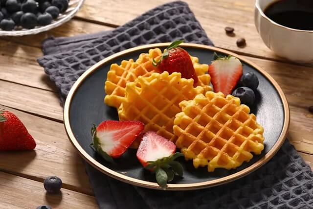
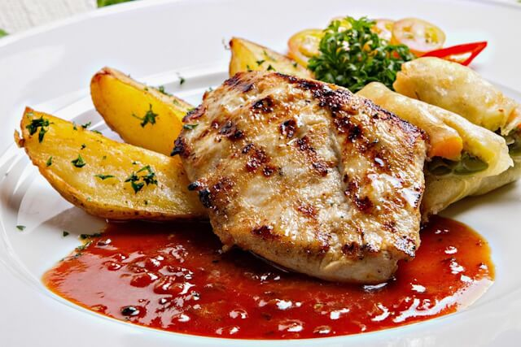
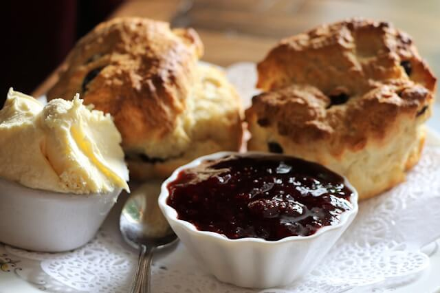
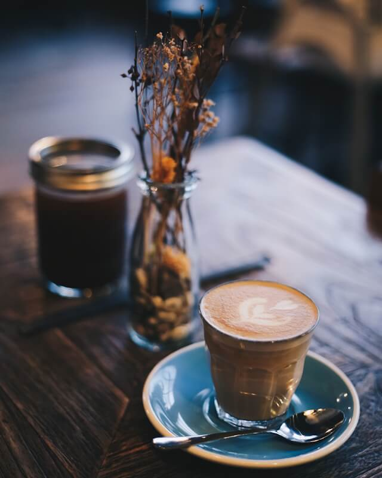

Meny
Se vad som serveras till frukost, lunch, och afternoon tea.
Frukost
Serveras kl 07:00 - 10:00 vardagar
kl 07:00 - 11:00 lördag och söndag
- Smörgås 30 kr
- Välj mellan ost/skinka, brieost, eller växtbaserat.
- Pannkakor 35 kr
- Våfflor 35 kr
- Havregrynsgröt 15 kr

Lunch
Serveras kl 11:00 - 15:00 vardagar
kl 11:30 - 15:00 lördag och söndag
- Kycklingfilé med potatis 75 kr
- Torsk med ugnsbakad potatis 65 kr
- Pasta Penne med växtbaserad färssås 60 kr

Afternoon tea
Serveras kl 16:00 - 18:00 vardagar
kl 16:00 - 19:00 lördag och söndag
- Scones med färskost och sylt 30 kr
- Wienerbröd 12 kr
- Blåbärsmuffins 15 kr
- Chokladmuffins 12 kr

Dryck
Kan beställas under alla måltider.
- Vatten är gratis
- Kaffe 5 kr (fri påfyllning)
- Te 5 kr
- English breakfast eller Earl Grey
- Vilka te sorter som finns varierar.
- Apelsinjuice 10 kr
- Mjölk 5 kr

Allergier
Vissa rätter kan ändras för allergiker.
Alla frukosträtter finns som gluten, mjölk, och äggfria alternativ.
Chokladmuffinsen är mjölk och äggfria. Scones och båda typer av muffins finns som glutenfritt alternativ.
Om det finns frågor hänvisar vi till personalen.